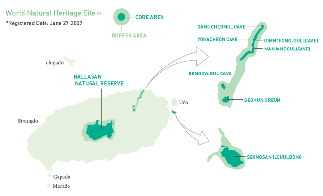
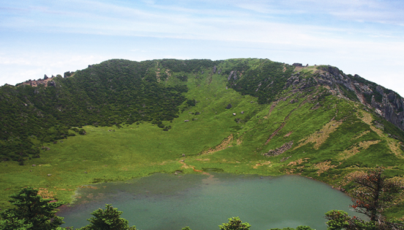
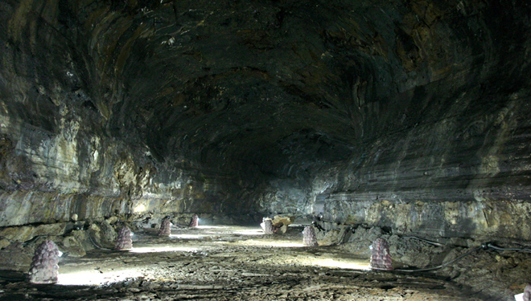

Public enterprise working for the happiness of all through tourism, JTO
Jeju in the World
HOME > Jeju in the World > Natural Heritage Site
Natural Heritage Site
- 
- Hallasan Mountain Natural Reserve, Geomunoreum Lava Tube System, Seongsan Ilchulbong Tuff Cone. Due to its breathtaking beauty, these three areas known as ‘Jeju Volcanic Island and Lava Tubes’ are selected unanimously by the World Heritage Committee as the first World Natural Heritage Site in South Korea.
-

- 01. Hallasan Mountain, the Highest Holy Mountain in South Korea
-
• Name of the site. Hallasan Natural Reserve
• Area. 164.401 Sq. Km(Core area 90.931 Sq. Km, Buffer area 73.474 Sq. Km)
• Location. Jeju-si and Seogwipo-si
• National Designated Cultural Item. Natural Monument No.182 (1996) - Hallasan Mountain which rises 1,950m above sea level is the highest mountain in South Korea. Baengnokdam, the crater and lake located at the peak of Hallasan Mountain, and about 40 oreums, a beautiful sight of steep and fantastic rock cliffs are designated in 1966 and 1970 as Nature Monument and National Park respectively, and in 2002 designated as a bio-reserve area by UNESCO. As the peak of Hallasan Mountain is made of diverse volcanic characteristics, depending on the angle of one’s view, one can feel its uniqueness. To the west of Baengnokdam crater, a steep shape formed by basalt lava of high viscosity is found and to the east, low viscosity basalt lava formed a gentle plateau. The south slope is so beautiful that it is captured in a folktale which states the story of immortals that played in the lake. Hallasan Mountain is also a mountain where fir tree forest is found which is unique of its kind in the world. At 1,400m above sea level an endemic species of cinder cones including pine trees are grown. It also possesses an outstanding biological research value in the study of cinder cones. Besides this at 1,700m, are distributed 39 different kinds of polar species which play a very important part in the study of alpine life such as the Jeju weasel, Jeju salamander, women diver snake, etc., are seen in Hallasan Mountain. Well endowed with natural resources of scientific values, Hallasan Mountain is a noted mountain worldwide.
-

- 02. 9 Lava Tubes, Geomun Oreum Lava Tube System
-
• Designation. Geomun Oreum Lava Tube System
• Area. 22.367 Sq. Km (Core Area 3.303 sq. km, Buffer Area 19.064 sq.km)
• Location. Hamdeok Elementary School, East side of Seonin School, Jocheoneup, Jeju-si Branch, Along the East Industry Route. - A fairy tale like story of basaltic lava that flew underneath the earth’s surface spewed out and formed deep caves, are found in Jeju. Geomun Oreum Lava Tube System which stretches from Jocheoneup to Hengwon-ri, was formed by the eruption of a rich basaltic Geomun Oreum volcano and is situated atop an elevation of 456m above sea level. It was formed between 100,000 to 300,000 years ago and has 9 caves altogether. Among them Bengdwigul, Manjanggul, Yongcheondonggul, Dangcheomuldonggul have been inscribed as National Nature Monument. As all the tubes are exceptionally magnificent and ancient, the condition of preservation is commendable.
-

- 03. Oreum of the Rising Sun, Seongsan Ilchulbong
-
• Designation. Seongsan Ilchulbong Tuff Cone
• Area. 1.688 sq. km (Core area 0.518 sq. km, Buffer area 1.17 sq. km)
• Location. Seogwipo-si - On the east coast of Jeju is situated the 182m Seongsan Ilchulbong which looks like a grand old castle. It was formed 5,000 years ago by an underwater eruption on the shallow sea bed. Especially, the exquisite inner structure which looks like a bowl formed with a crater and slope, excluding the North West side and the repeated process of eating away and depositing by waves, all joined together make a surpassing sight. With a background the sun rising in the east beyond the horizon, the beauty of Seongsan Ilchulbong is beyond words description. That is why many people gather in this place on New Year morning to see the sun rise. The fatal attraction of the vast sea beneath a steep cliff and the white bubbles made by blue waves are so beautiful they stir up one for a moment a desire to plunge into the sea. In addition, it is also recognized worldwide as a base for researches on past volcano eruptions and underwater volcanoes.